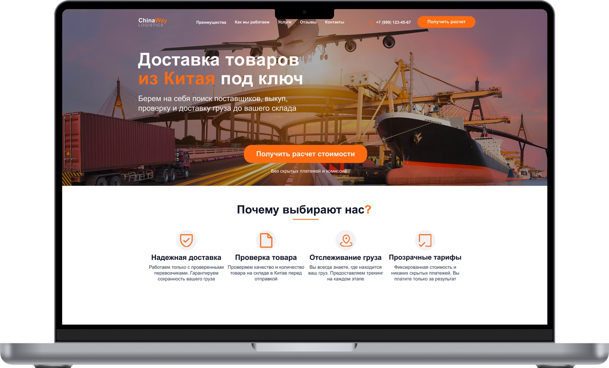

01 — PROBLEM
Предполагаемая пользовательская проблема
Сложные услуги, несколько этапов перевозки и непрозрачный процесс обращения могут создавать неопределённость ещё до первого контакта.
Доставка из Китая — без сложных объяснений. Самостоятельный концепт и реализация коммерческого лендинга на Tilda.
Открыть сайт↗
В логистике клиенту важно понять, что входит в услугу, как организована доставка и что нужно сделать для расчёта стоимости. Я выбрал эту ситуацию как основу самостоятельного проекта — без реального клиентского брифа и без заявлений о проведённых интервью.
Сложные услуги, несколько этапов перевозки и непрозрачный процесс обращения могут создавать неопределённость ещё до первого контакта.
Собрать страницу, которая последовательно объясняет предложение, демонстрирует процесс и приводит пользователя к запросу расчёта.
Мой вклад — постановка задачи для концепта, информационная архитектура, визуальный дизайн и сборка опубликованной страницы в Tilda. Вместо выдуманных исследований здесь показана логика принятых решений.
Схема предполагаемого сценария. Не является результатом пользовательского тестирования.
Гипотетическая CJM: потребности и барьеры сформулированы как design assumptions, not interview findings.
Сразу обозначает услугу и основное действие.
Отвечают на базовые вопросы о процессе.
Делают сложную услугу последовательной.
Завершает сценарий понятным CTA.
Тёмно-синий формирует визуальную основу, оранжевый выделяет действия. Светлые секции помогают считывать информацию, а фотографии логистики связывают интерфейс с темой проекта.
Крупный оффер, короткие пояснения и выделенные действия.
Чередование светлых блоков и контрастных секций.
Повтор CTA после объяснения ценности предложения.
Результат — опубликованный лендинг на Tilda, который можно открыть и изучить в браузере. В рамках проекта я проверил, как связать структуру, визуальную систему и ключевой сценарий в единое решение.
Важно не просто красиво оформить блоки, а выстроить их так, чтобы каждый отвечал на следующий вопрос пользователя.
Я самостоятельно прошёл полный цикл: структура, интерфейс, сборка на Tilda и публикация. Результат — работающий сайт, а не только статичные макеты.